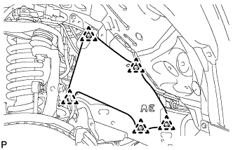
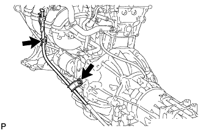
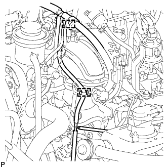
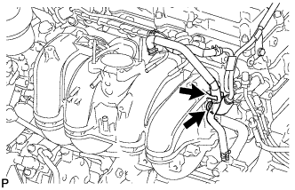
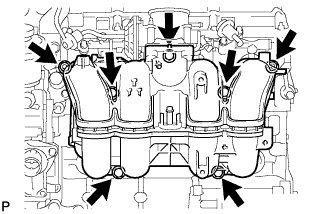

ВПУСКНОЙ КОЛЛЕКТОР > СНЯТИЕ |
| 1. ОТСОЕДИНИТЕ ПРОВОД ОТ ОТРИЦАТЕЛЬНОГО ВЫВОДА АККУМУЛЯТОРНОЙ БАТАРЕИ |
| 2. СНИМИТЕ УПЛОТНЕНИЕ ФАРТУКА ЛЕВОГО ПЕРЕДНЕГО КРЫЛА |
Освободите 5 фиксаторов и снимите уплотнение фартука переднего крыла.
| 3. СНИМИТЕ УПЛОТНЕНИЕ № 1 МЕЖДУ ФАРТУКОМ ЛЕВОГО ПЕРЕДНЕГО КРЫЛА И РАМОЙ |
|  |
Освободите 5 фиксаторов и снимите уплотнение между фартуком переднего крыла и рамой.
| 4. СНИМИТЕ ПАТРУБОК МАСЛОНАЛИВНОЙ ГОРЛОВИНЫ ТРАНСМИССИИ В СБОРЕ |
|  |
Снимите щуп проверки уровня масла в трансмиссии.
Отверните 2 болта и снимите маслозаливной патрубок.
Снимите кольцевое уплотнение с маслозаливного патрубка.
| 5. СНИМИТЕ СТАРТЕР В СБОРЕ |
Для моделей мощностью 1,4 кВт:
Снимите стартер (Нажмите здесь).
Для моделей мощностью 2,0 кВт:
Снимите стартер (Нажмите здесь).
| 6. СНИМИТЕ КОРПУС ДРОССЕЛЬНОЙ ЗАСЛОНКИ С ЭЛЕКТРОДВИГАТЕЛЕМ В СБОРЕ |
Снимите корпус дроссельной заслонки с электродвигателем (Нажмите здесь).
| 7. СНИМИТЕ ТОПЛИВНУЮ РАМПУ С ТОПЛИВНОЙ ФОРСУНКОЙ |
Снимите топливную рампу с топливной форсункой (Нажмите здесь).
| 8. СНИМИТЕ ЭЛЕКТРОВАКУУМНЫЙ КЛАПАН ПРОДУВКИ |
 |
Отсоедините разъем электровакуумного клапана продувки (VSV).
Отсоедините 2 шланга продувки от электровакуумного клапана продувки.
Выверните болт и снимите электровакуумный клапан продувки.
| 9. СНИМИТЕ ВПУСКНОЙ КОЛЛЕКТОР |
|  |
Для передней стороны двигателя:
Открепите 2 зажима жгута проводов от 2 кронштейнов зажимов.
|  |
Для задней стороны двигателя:
Открепите перепускной шланг охлаждающей жидкости № 2 и отсоедините шланг вентиляции № 3 от впускного коллектора.
|  |
Выверните 5 болтов, отверните 2 гайки и снимите впускной коллектор.
Снимите прокладку с впускного коллектора.
 |
Выверните 2 болта и снимите 2 кронштейна зажимов жгута проводов и питающий шланг паров топлива № 2 с впускного коллектора.